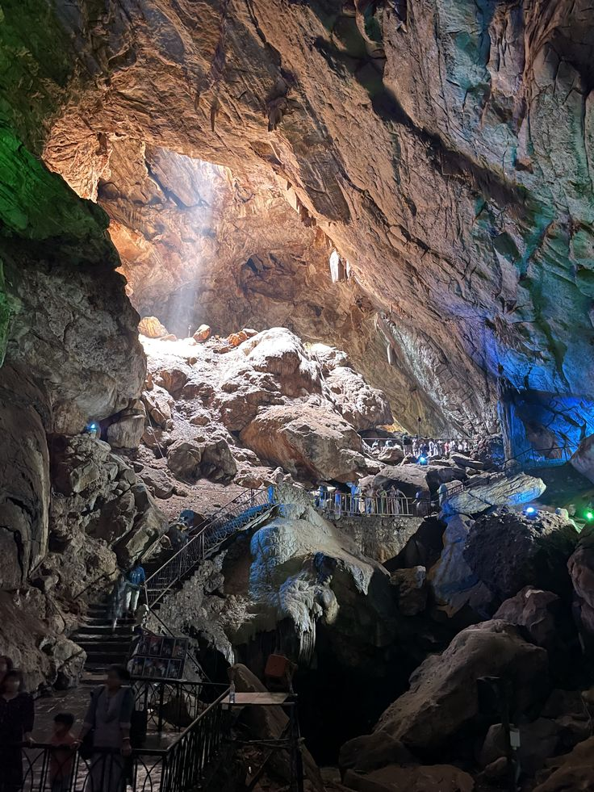

Borra Caves
Located in the Ananthagiri Hills of the Araku Valley near Vizag, the Borra Caves are one of the deepest cave networks in India. Formed naturally over millions of years by water flowing over limestone, sunlight beams through high natural roof openings to illuminate spectacular rock formations.

Natural sunlight penetrating deep into the main cavern of Borra Caves.